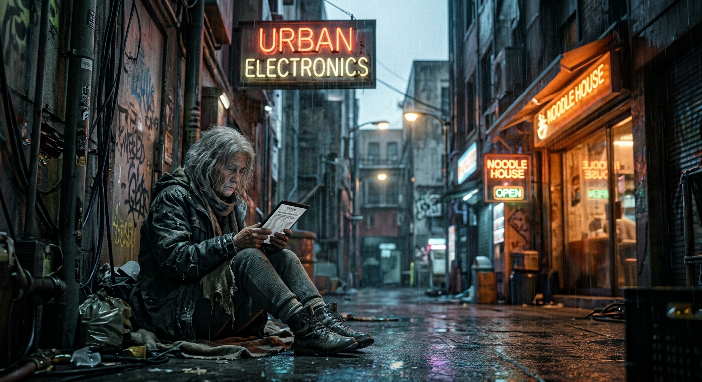

uma pessoa sozinha sem internet no futuro
Ideia bruta, sem direção técnica.
PORTFÓLIO DIGITAL • PRODUÇÕES
Como a linguagem pode ser usada como ferramenta de criação artística através da Inteligência Artificial. Este registro mostra o tema exclusão digital em um cenário futurista, desde o prompt inicial até a imagem final, com todas as tentativas de refinamento.
01 / IMAGEM FINAL

imagens/arte-ia-final.jpg e recarregue a página.
Figura 1 — “Fora da rede”: uma pessoa idosa sozinha em um beco de uma cidade futurista iluminada por neon, olhando um aparelho apagado enquanto todos ao redor estão conectados. Tema: exclusão digital.
02 / REGISTRO DOS PROMPTS
uma pessoa sozinha sem internet no futuro
Ideia bruta, sem direção técnica.
pessoa idosa sentada sozinha no chão de um beco urbano à noite sob chuva, letreiros de neon brilhando nas fachadas (lojas de eletrônicos e restaurantes), ela olhando um aparelho apagado no colo, luz azul fria da chuva contra luz laranja do neon, lente 50mm, profundidade de campo rasa, estética cyberpunk, film grain, atmosfera melancólica, exclusão digital, alta definição
Resultado final — equilíbrio entre tema, técnica e atmosfera.
Tentativas de refinamento
uma pessoa sozinha sem acesso à internet em uma cidade futurista, luz fria de telas no rosto, lente 35mm, alto contraste
O que mudou: entraram termos técnicos de iluminação (luz fria das telas) e lente (35mm). Por quê: a imagem anterior era genérica e sem atmosfera.
uma pessoa sozinha em uma metrópole futurista à noite, hologramas, chuva, estilo Syd Mead, anos 2070, iluminação cinematográfica, tons de azul e laranja
O que mudou: referência de artista (Syd Mead, futurista clássico) e época (anos 2070). Por quê: para dar identidade visual e coerência com o tema futurista.
mulher idosa sentada sozinha no chão de um beco, olhando um aparelho apagado, hologramas acima dela, lente 50mm, profundidade de campo rasa, film grain, atmosfera melancólica
O que mudou: sujeito definido (idosa + aparelho apagado) e profundidade de campo. Por quê: tornar a exclusão digital visível e emocional, não apenas cenário bonito.
03 — PROCESSO CRIATIVO
O processo começou com uma frase simples e evoluiu a cada rodada. Na primeira tentativa, foram adicionados termos técnicos de iluminação e enquadramento (luz fria das telas, lente 35mm) para transformar a ideia abstrata em uma cena possível de ser renderizada.
Na segunda, entrou uma referência artística (Syd Mead, designer de futuros dos anos 2070) e uma época definida, o que deu unidade ao estilo — sem isso, a IA misturava estilos diferentes em cada geração.
Por fim, a terceira tentativa fixou o sujeito (uma mulher idosa diante de um aparelho apagado) e a emoção desejada. Cada ajuste surgiu de um problema: a cena estava genérica, depois sem estilo, depois bonita demais e pouco humana.
04 — REFLEXÃO ARTÍSTICA
A intenção original era mostrar a exclusão digital não como ausência de aparelhos, mas como solidão no meio da tecnologia — alguém rodeado de conexões e mesmo assim desconectado.
O resultado final correspondeu à intenção: a cena futurista mantém a promessa visual do tema proposto, e a figura humana no centro do enquadramento devolve o foco para quem fica de fora da rede. A limitação da ferramenta — a IA às vezes ignora detalhes do rosto ou de textos — foi contornada mantendo o sujeito pequeno dentro da cena, fazendo parte da narrativa.
Aprender a “conversar” com a IA mostrou que o prompt é roteiro: quanto mais preciso o direcionamento técnico, mais próxima a imagem fica da intenção artística.